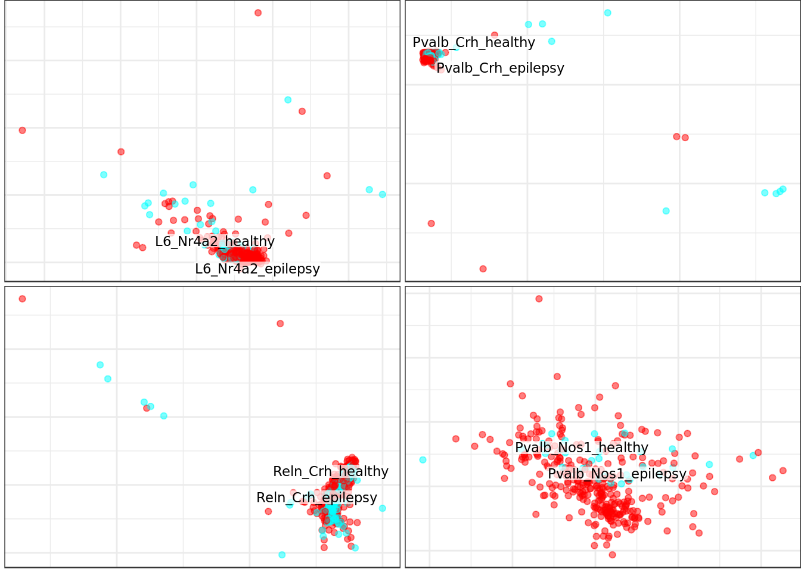
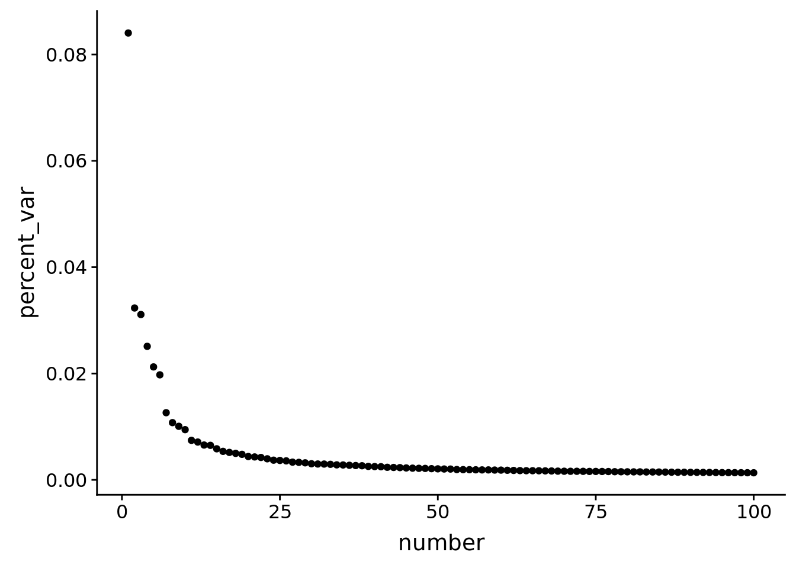

Last updated: 2019-06-03
Checks: 6 0
Knit directory: SecretUtils/
This reproducible R Markdown analysis was created with workflowr (version 1.3.0). The Checks tab describes the reproducibility checks that were applied when the results were created. The Past versions tab lists the development history.
Great! Since the R Markdown file has been committed to the Git repository, you know the exact version of the code that produced these results.
Great job! The global environment was empty. Objects defined in the global environment can affect the analysis in your R Markdown file in unknown ways. For reproduciblity it’s best to always run the code in an empty environment.
The command set.seed(20190415) was run prior to running the code in the R Markdown file. Setting a seed ensures that any results that rely on randomness, e.g. subsampling or permutations, are reproducible.
Great job! Recording the operating system, R version, and package versions is critical for reproducibility.
Nice! There were no cached chunks for this analysis, so you can be confident that you successfully produced the results during this run.
Great! You are using Git for version control. Tracking code development and connecting the code version to the results is critical for reproducibility. The version displayed above was the version of the Git repository at the time these results were generated.
Note that you need to be careful to ensure that all relevant files for the analysis have been committed to Git prior to generating the results (you can use wflow_publish or wflow_git_commit). workflowr only checks the R Markdown file, but you know if there are other scripts or data files that it depends on. Below is the status of the Git repository when the results were generated:
Ignored files:
Ignored: .Rhistory
Ignored: .Rproj.user/
Untracked files:
Untracked: .Rbuildignore
Untracked: R/hello.R
Untracked: analysis/make_scanpy_viktor.R
Untracked: analysis/paga.Rmd
Untracked: analysis/subtype_distances.Rmd
Untracked: analysis/subtype_distances2.Rmd
Untracked: analysis/subtype_distances4.Rmd
Untracked: analysis/subtype_distances_redux.Rmd
Untracked: analysis/subtype_distances_revenge.Rmd
Untracked: analysis/test_output.Rmd
Untracked: analysis/transmute_peters_code.Rmd
Untracked: docs/figure/correlation_stuff.Rmd/
Untracked: docs/figure/jensen_shannon_stuff.Rmd/
Untracked: docs/figure/misc_metrics.Rmd/
Untracked: docs/figure/paga.Rmd/
Untracked: man/
Unstaged changes:
Modified: DESCRIPTION
Modified: R/asdf.R
Modified: R/peter_code_utils.R
Modified: analysis/subtype_distances3.Rmd
Modified: analysis/transmute_code_eps.Rmd
Modified: analysis/transmute_code_eps_2.Rmd
Note that any generated files, e.g. HTML, png, CSS, etc., are not included in this status report because it is ok for generated content to have uncommitted changes.
These are the previous versions of the R Markdown and HTML files. If you’ve configured a remote Git repository (see ?wflow_git_remote), click on the hyperlinks in the table below to view them.
| File | Version | Author | Date | Message |
|---|---|---|---|---|
| Rmd | da8aac7 | githubz0r | 2019-06-03 | wflow_publish(c(“analysis/jensen_shannon_stuff.Rmd”, “analysis/visualizations.Rmd”, “analysis/correlation_stuff.Rmd”, |
library(conos)Loading required package: MatrixLoading required package: igraph
Attaching package: 'igraph'The following objects are masked from 'package:stats':
decompose, spectrumThe following object is masked from 'package:base':
unionlibrary(pheatmap)
#library(fuck)
source('/home/larsc/SecretUtils/R/asdf.R')
source('/home/larsc/SecretUtils/R/peter_code_utils.R')
require(pagoda2)Loading required package: pagoda2library(dplyr)
Attaching package: 'dplyr'The following objects are masked from 'package:igraph':
as_data_frame, groups, unionThe following objects are masked from 'package:stats':
filter, lagThe following objects are masked from 'package:base':
intersect, setdiff, setequal, unionlibrary(stringr)
library(tidyr)
Attaching package: 'tidyr'The following object is masked from 'package:igraph':
crossingThe following object is masked from 'package:Matrix':
expandlibrary(ggplot2)
library(cowplot)
Attaching package: 'cowplot'The following object is masked from 'package:ggplot2':
ggsavelibrary(irlba)
con_object <- readRDS(file.path('/home/larsc/data/10x_preproced_graphed.rds'))
annot <- readRDS(file.path('/home/demharters/R/projects/UPF9_14_17_19_22_23_24_32_33/metadata_10x_final.rds'))rowbind the adjusted expression values
if (is.null(annot$cellid)) {
annot$cellid <- annot %>% rownames
}
annot <- annot %>% mutate(subtype_condition = paste(annot$subtype, annot$condition, sep='_'))
rbound_panel <- RbindPanel(con_object)Are the cell names in the same order?
identical(rownames(rbound_panel), annot$cellid) # thank god, maybe add a sort for the future in Panelize[1] TRUEcondition subtype table
state_split <- split(annot, annot$condition, drop=TRUE)
condition_tables <- state_split %>% lapply(function(x){table(x$subtype)})
condition_tables$epilepsy
Id2_Nos1 Id2_Reln L2/3_Cux2 L2_Lamp5 L3_Prss12
497 947 1158 2224 284
L4_Rorb L5_Grin3a L5_Htr2c L6_Nr4a2 L6_Syn3
3271 2431 518 508 714
L6_Tle4 Pvalb_Crh Pvalb_Nos1 Pvalb_Sulf1 Reln_Crh
831 237 312 1444 442
Sst_Calb1 Sst_Tac3_Lhx6 Vip_Crh Vip_Nr2f2 Vip_Sema3c
1354 1802 1811 914 1111
$healthy
Id2_Nos1 Id2_Reln L2/3_Cux2 L2_Lamp5 L3_Prss12
175 444 826 3067 136
L4_Rorb L5_Grin3a L5_Htr2c L6_Nr4a2 L6_Syn3
915 463 109 120 219
L6_Tle4 Pvalb_Crh Pvalb_Nos1 Pvalb_Sulf1 Reln_Crh
163 93 31 909 183
Sst_Calb1 Sst_Tac3_Lhx6 Vip_Crh Vip_Nr2f2 Vip_Sema3c
654 642 1080 538 621 plot joint graph colored by sample
con_object$plotGraph(color.by='sample',mark.groups=F,alpha=0.1,show.legend=T)Estimating embeddings.subtypes
annot <- annot %>% mutate(subtype_condition = paste(annot$subtype, annot$condition, sep='_'))
subannot=setNames(annot$subtype, annot$cellid)
con_object$plotGraph(groups=subannot, font.size=3, shuffle.colors=T, show.legend=F)condition
disannot<-setNames(annot$condition, annot$cellid)
con_object$plotGraph(groups=disannot)subtype-condition
annot <- annot %>% mutate(subtype_condition = paste(annot$subtype, annot$condition, sep='_'))
cellannot=setNames(annot$subtype_condition, annot$cellid)
con_object$plotGraph(groups=cellannot, font.size=3, shuffle.colors=T, show.legend=F)Individual subtype joint graph plot
plotOneSubtype <- function(con.object, annotation, subtype, font.size=2, alpha=0.3, size=0.4){
split.annot<-split(annotation, annotation$subtype)
sub.annot <- split.annot[[subtype]]
sub.annot <- sub.annot %>% mutate(sub.cond = paste(sub.annot$subtype, sub.annot$condition, sep='_'))
sub.groups <- setNames(sub.annot$sub.cond, sub.annot$cellid)
con.object$plotGraph(groups=sub.groups, font.size=font.size, alpha=alpha, size=size, mark.groups=T, plot.na=F)
}
#plotOneSubtype(con_object, annot, 'L2_Lamp5') # really should use repel, but I can't make it work
all_types <- annot$subtype %>% unique
all_types_plots <- all_types %>% lapply(function(x, con.obj, annotation){
plotOneSubtype(con.obj, annotation, x, font.size=3, alpha=0.5, size=1.5)}, con_object, annot)Warning: Factor `Group` contains implicit NA, consider using
`forcats::fct_explicit_na`
Warning: Factor `Group` contains implicit NA, consider using
`forcats::fct_explicit_na`
Warning: Factor `Group` contains implicit NA, consider using
`forcats::fct_explicit_na`
Warning: Factor `Group` contains implicit NA, consider using
`forcats::fct_explicit_na`
Warning: Factor `Group` contains implicit NA, consider using
`forcats::fct_explicit_na`
Warning: Factor `Group` contains implicit NA, consider using
`forcats::fct_explicit_na`
Warning: Factor `Group` contains implicit NA, consider using
`forcats::fct_explicit_na`
Warning: Factor `Group` contains implicit NA, consider using
`forcats::fct_explicit_na`
Warning: Factor `Group` contains implicit NA, consider using
`forcats::fct_explicit_na`
Warning: Factor `Group` contains implicit NA, consider using
`forcats::fct_explicit_na`
Warning: Factor `Group` contains implicit NA, consider using
`forcats::fct_explicit_na`
Warning: Factor `Group` contains implicit NA, consider using
`forcats::fct_explicit_na`
Warning: Factor `Group` contains implicit NA, consider using
`forcats::fct_explicit_na`
Warning: Factor `Group` contains implicit NA, consider using
`forcats::fct_explicit_na`
Warning: Factor `Group` contains implicit NA, consider using
`forcats::fct_explicit_na`
Warning: Factor `Group` contains implicit NA, consider using
`forcats::fct_explicit_na`
Warning: Factor `Group` contains implicit NA, consider using
`forcats::fct_explicit_na`
Warning: Factor `Group` contains implicit NA, consider using
`forcats::fct_explicit_na`
Warning: Factor `Group` contains implicit NA, consider using
`forcats::fct_explicit_na`
Warning: Factor `Group` contains implicit NA, consider using
`forcats::fct_explicit_na`plot_grid(plotlist=all_types_plots[1:4], nrow=2)plot_grid(plotlist=all_types_plots[5:8], nrow=2)plot_grid(plotlist=all_types_plots[9:12], nrow=2)plot_grid(plotlist=all_types_plots[13:16], nrow=2)plot_grid(plotlist=all_types_plots[17:20], nrow=2)
plotOneSubtype(con_object, annot, 'L4_Rorb', font.size=3, alpha=0.5, size=1.5)Warning: Factor `Group` contains implicit NA, consider using
`forcats::fct_explicit_na`fractional plot
FractionalPlot(annot$sample, annot$subtype, annot$condition)More details on individual samples
frac_df <- FractionalPlot(annot$sample, annot$subtype, annot$condition, return.plot=F)
ggplot(na.omit(frac_df),aes(x=subtype,y=freq))+geom_bar(stat='identity')+
theme(axis.text.x = element_text(angle = 90, hjust = 1), axis.text.y = element_text(angle = 90, hjust = 0.5)) +
xlab("") +ylab("fraction of total cells")+facet_wrap(~patient, nrow=4)ggplot(na.omit(frac_df),aes(x=subtype,y=freq, col=patient, shape=condition))+geom_point()+
theme(axis.text.x = element_text(angle = 90, hjust = 1), axis.text.y = element_text(angle = 90, hjust = 0.5)) +
xlab("") +ylab("fraction of total cells")PCA
od_genes = conos:::getOdGenesUniformly(con_object$samples, 4000)
pca_cm <- prcomp_irlba(rbound_panel[, od_genes],n=100)
pca_cmat <- pca_cm$x
rownames(pca_cmat) <- rownames(rbound_panel)plot PCA eigenspectrum
pca_sum <- summary(pca_cm)
bind_cols(percent_var=pca_sum$importance[2,], number=c(1:100)) %>% ggplot(aes(y=percent_var, x=number))+geom_point()
PCA annotated by samples
sampannot <- setNames(annot$sample, annot$cellid)
pca_cmat[,1:2] %>% as_tibble %>% mutate(samples=annot$sample) %>%
ggplot(aes(x=PC1, y=PC2))+geom_point(aes(col=samples), alpha=0.3, size=0.2)+guides(colour = guide_legend(override.aes = list(size=2, alpha=1)))Tsne, rbound pagoda looks like sample 4 has a lot of Lamp5 cells
require(Rtsne)Loading required package: Rtsnepagoda_tsne <- pca_cmat[,0:25] %>% as.matrix %>% Rtsne(pca=F) - point 10000 of 34198
- point 20000 of 34198
- point 30000 of 34198tsne_vals <- pagoda_tsne$Y; colnames(tsne_vals)=c('var1', 'var2')
tsne_annot <- bind_cols(tsne_vals %>% as.data.frame, annot)
tsne_annot %>% ggplot(aes(x=var1, y=var2))+geom_point(aes(col=sample), alpha=0.7, size=0.2) +
guides(colour = guide_legend(override.aes = list(size=2)))Tsne whole pagoda
devtools::load_all('/home/viktor_petukhov/Copenhagen/NeuronalMaturation')Loading NeuronalMaturationcm_merged_raw <- lapply(con_object$samples, function(p2) t(p2$misc$rawCounts)) %>%
NeuronalMaturation::MergeCountMatrices()
p2 <- NeuronalMaturation::GetPagoda(cm_merged_raw)34198 cells, 33694 genes; normalizing ... using plain model winsorizing ... log scale ... done.
calculating variance fit ... using gam 1030 overdispersed genes ... 1030 persisting ... done.
running PCA using 1000 OD genes .... done
calculating distance ... pearson ...running tSNE using 30 cores:
- point 10000 of 34198
- point 20000 of 34198
- point 30000 of 34198pagoda PCA
pca_whole <- bind_cols(pca1=p2$reductions$PCA[,1], pca2=p2$reductions$PCA[,2], sample=annot$sample,
subtype=annot$subtype, condition=annot$condition)
pca_whole %>% ggplot(aes(x=pca1, y=pca2))+geom_point(aes(col=sample), alpha=0.3, size=0.2)+guides(colour = guide_legend(override.aes = list(size=2, alpha=1)))conos:::plotSamples(list(p2), groups=sampannot, shuffle.colors=T, font.size=c(2,5),
show.legend=T, size=0.4)MergedOneSubtype <- function(annotation, subtype, font.size=2, alpha=0.3, size=0.4){
split.annot<-split(annotation, annotation$subtype)
sub.annot <- split.annot[[subtype]]
sub.annot <- sub.annot %>% mutate(sub.cond = paste(sub.annot$subtype, sub.annot$sample, sep='_'))
sub.groups <- setNames(sub.annot$sub.cond, sub.annot$cellid)
conos:::plotSamples(list(p2), groups=sub.groups, shuffle.colors=T, font.size=c(2),
show.legend=T, size=0.4, plot.na=F)
}
#plotOneSubtype(con_object, annot, 'L2_Lamp5') # really should use repel, but I can't make it work
all_types <- annot$subtype %>% unique
all_types_plots <- all_types %>% lapply(function(x, annotation){MergedOneSubtype(annotation, x)}, annot)Warning: Factor `Group` contains implicit NA, consider using
`forcats::fct_explicit_na`
Warning: Factor `Group` contains implicit NA, consider using
`forcats::fct_explicit_na`
Warning: Factor `Group` contains implicit NA, consider using
`forcats::fct_explicit_na`
Warning: Factor `Group` contains implicit NA, consider using
`forcats::fct_explicit_na`
Warning: Factor `Group` contains implicit NA, consider using
`forcats::fct_explicit_na`
Warning: Factor `Group` contains implicit NA, consider using
`forcats::fct_explicit_na`
Warning: Factor `Group` contains implicit NA, consider using
`forcats::fct_explicit_na`
Warning: Factor `Group` contains implicit NA, consider using
`forcats::fct_explicit_na`
Warning: Factor `Group` contains implicit NA, consider using
`forcats::fct_explicit_na`
Warning: Factor `Group` contains implicit NA, consider using
`forcats::fct_explicit_na`
Warning: Factor `Group` contains implicit NA, consider using
`forcats::fct_explicit_na`
Warning: Factor `Group` contains implicit NA, consider using
`forcats::fct_explicit_na`
Warning: Factor `Group` contains implicit NA, consider using
`forcats::fct_explicit_na`
Warning: Factor `Group` contains implicit NA, consider using
`forcats::fct_explicit_na`
Warning: Factor `Group` contains implicit NA, consider using
`forcats::fct_explicit_na`
Warning: Factor `Group` contains implicit NA, consider using
`forcats::fct_explicit_na`
Warning: Factor `Group` contains implicit NA, consider using
`forcats::fct_explicit_na`
Warning: Factor `Group` contains implicit NA, consider using
`forcats::fct_explicit_na`
Warning: Factor `Group` contains implicit NA, consider using
`forcats::fct_explicit_na`
Warning: Factor `Group` contains implicit NA, consider using
`forcats::fct_explicit_na`#names(all_types_plots) <- all_types
all_types_plots[10][[1]]#plot_grid(all_types_plots)
sessionInfo()R version 3.5.3 (2019-03-11)
Platform: x86_64-pc-linux-gnu (64-bit)
Running under: Ubuntu 18.04.2 LTS
Matrix products: default
BLAS: /usr/lib/x86_64-linux-gnu/atlas/libblas.so.3.10.3
LAPACK: /usr/lib/x86_64-linux-gnu/atlas/liblapack.so.3.10.3
locale:
[1] LC_CTYPE=en_US.UTF-8 LC_NUMERIC=C
[3] LC_TIME=en_US.UTF-8 LC_COLLATE=en_US.UTF-8
[5] LC_MONETARY=en_US.UTF-8 LC_MESSAGES=en_US.UTF-8
[7] LC_PAPER=en_US.UTF-8 LC_NAME=C
[9] LC_ADDRESS=C LC_TELEPHONE=C
[11] LC_MEASUREMENT=en_US.UTF-8 LC_IDENTIFICATION=C
attached base packages:
[1] stats graphics grDevices utils datasets methods base
other attached packages:
[1] NeuronalMaturation_0.1.0 Rtsne_0.14
[3] irlba_2.3.3 cowplot_0.9.4
[5] ggplot2_3.1.1 tidyr_0.8.3
[7] stringr_1.4.0 dplyr_0.8.0.1
[9] pagoda2_0.1.0 pheatmap_1.0.12
[11] conos_1.0.0 igraph_1.2.4
[13] Matrix_1.2-17
loaded via a namespace (and not attached):
[1] nlme_3.1-139 fs_1.2.7 usethis_1.5.0
[4] devtools_2.0.2 RColorBrewer_1.1-2 rprojroot_1.3-2
[7] prabclus_2.2-7 tools_3.5.3 backports_1.1.4
[10] R6_2.4.0 mgcv_1.8-28 lazyeval_0.2.2
[13] colorspace_1.4-1 trimcluster_0.1-2.1 nnet_7.3-12
[16] withr_2.1.2 tidyselect_0.2.5 gridExtra_2.3
[19] prettyunits_1.0.2 processx_3.3.0 compiler_3.5.3
[22] git2r_0.25.2 cli_1.1.0 desc_1.2.0
[25] labeling_0.3 triebeard_0.3.0 diptest_0.75-7
[28] scales_1.0.0 DEoptimR_1.0-8 mvtnorm_1.0-10
[31] robustbase_0.93-4 callr_3.2.0 digest_0.6.18
[34] rmarkdown_1.12 base64enc_0.1-3 pkgconfig_2.0.2
[37] htmltools_0.3.6 sessioninfo_1.1.1 rlang_0.3.4
[40] rstudioapi_0.10 shiny_1.3.1 mclust_5.4.3
[43] dendextend_1.10.0 magrittr_1.5 modeltools_0.2-22
[46] Rcpp_1.0.1 munsell_0.5.0 viridis_0.5.1
[49] stringi_1.4.3 whisker_0.3-2 yaml_2.2.0
[52] MASS_7.3-51.3 flexmix_2.3-15 pkgbuild_1.0.3
[55] plyr_1.8.4 grid_3.5.3 parallel_3.5.3
[58] promises_1.0.1 ggrepel_0.8.0 crayon_1.3.4
[61] lattice_0.20-38 splines_3.5.3 knitr_1.22
[64] ps_1.3.0 pillar_1.3.1 ggpubr_0.2
[67] rjson_0.2.20 fpc_2.1-11.1 stats4_3.5.3
[70] pkgload_1.0.2 glue_1.3.1 evaluate_0.13
[73] remotes_2.0.4 httpuv_1.5.1 urltools_1.7.3
[76] testthat_2.0.1 gtable_0.3.0 purrr_0.3.2
[79] kernlab_0.9-27 assertthat_0.2.1 xfun_0.6
[82] mime_0.6 xtable_1.8-4 later_0.8.0
[85] class_7.3-15 viridisLite_0.3.0 tibble_2.1.1
[88] memoise_1.1.0 workflowr_1.3.0 cluster_2.0.8
[91] Rook_1.1-1 brew_1.0-6